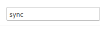
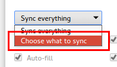
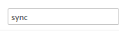
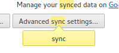
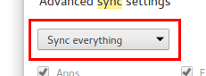
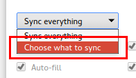
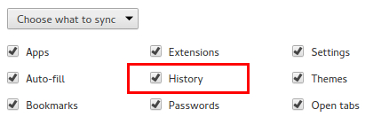
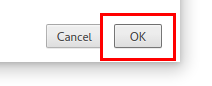

DynamicHistory is ready to go! Now you may configure it by clicking here (or by clicking the options button in the extensions section).
Note: It is HIGHLY recommended that you read this!
| Step # | Description | Screenshot |
| 1. | Click on the "three lines menu" and click on "Settings". | |
| 2. | Click on the search box in the top right and search for the word: "sync". |  |
| 3. | Click on "Advanced sync settings...". |  |
| 4. | Click on the dropdown menu and select "Choose what to sync". |   |
| 5. | Uncheck the "History" checkbox. |  |
| 6. | Press the "OK" button in the bottom right. |  |
DynamicHistory is ready to go! Now you may configure it by clicking here (or by clicking the options button in the extensions section). |